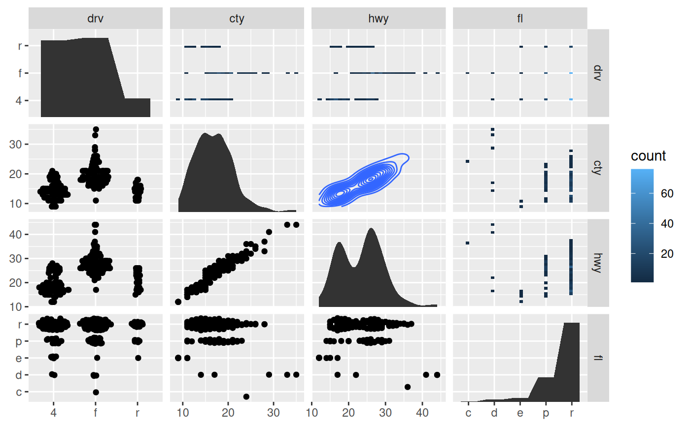
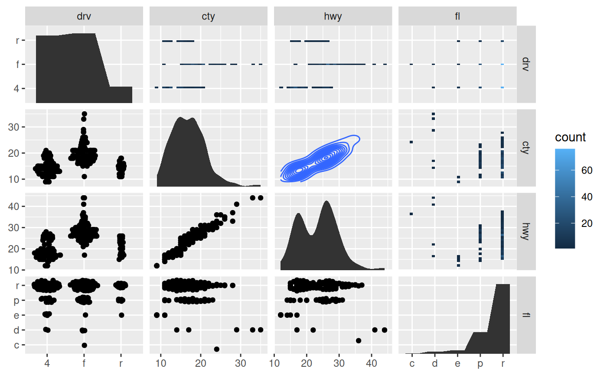

The facet_matrix() facet allows you to put different data columns into
different rows and columns in a grid of panels. If the same data columns are
present in both the rows and the columns of the grid, and used together with
ggplot2::geom_point() it is also known as a scatterplot matrix, and if
other geoms are used it is sometimes referred to as a pairs plot.
facet_matrix is so flexible that these types are simply a subset of its
capabilities, as any combination of data columns can be plotted against each
other using any type of geom. Layers should use the .panel_x and .panel_y
placeholders to map aesthetics to, in order to access the row and column
data.
facet_matrix(
rows,
cols = rows,
shrink = TRUE,
switch = NULL,
labeller = "label_value",
flip.rows = FALSE,
alternate.axes = FALSE,
layer.lower = NULL,
layer.diag = NULL,
layer.upper = NULL,
layer.continuous = NULL,
layer.discrete = NULL,
layer.mixed = NULL,
grid.y.diag = TRUE
)Arguments
- rows, cols
A specification of the data columns to put in the rows and columns of the facet grid. They are specified using the
ggplot2::vars()function wherein you can use standard tidyselect syntax as known from e.g.dplyr::select(). These data values will be made available to the different layers through the.panel_xand.panel_yvariables.- shrink
If
TRUE, will shrink scales to fit output of statistics, not raw data. IfFALSE, will be range of raw data before statistical summary.- switch
By default, the labels are displayed on the top and right of the plot. If
"x", the top labels will be displayed to the bottom. If"y", the right-hand side labels will be displayed to the left. Can also be set to"both".- labeller
A function that takes one data frame of labels and returns a list or data frame of character vectors. Each input column corresponds to one factor. Thus there will be more than one with
vars(cyl, am). Each output column gets displayed as one separate line in the strip label. This function should inherit from the "labeller" S3 class for compatibility withlabeller(). You can use different labeling functions for different kind of labels, for example uselabel_parsed()for formatting facet labels.label_value()is used by default, check it for more details and pointers to other options.- flip.rows
Should the order of the rows be reversed so that, if the rows and columns are equal, the diagonal goes from bottom-left to top-right instead of top-left to bottom-right.
- alternate.axes
Should axes be drawn at alternating positions.
- layer.lower, layer.diag, layer.upper
Specification for where each layer should appear. The default (
NULL) will allow any layer that has not been specified directly to appear at that position. Putting e.g.layer.diag = 2will make the second layer appear on the diagonal as well as remove that layer from any position that hasNULL. UsingTRUEwill put all layers at that position, and usingFALSEwill conversely remove all layers. These settings will only have an effect if the grid is symmetric.- layer.continuous, layer.discrete, layer.mixed
As above, but instead of referencing panel positions it references the combination of position scales in the panel. Continuous panels have both a continuous x and y axis, discrete panels have both a discrete x and y axis, and mixed panels have one of each. Unlike the position based specifications above these also have an effect in non-symmetric grids.
- grid.y.diag
Should the y grid be removed from the diagonal? In certain situations the diagonal are used to plot the distribution of the column data and will thus not use the y-scale. Removing the y gridlines can indicate this.
Note
Due to the special nature of this faceting it slightly breaks the ggplot2 API, in that any positional scale settings are ignored. This is because each row and column in the grid will potentially have very different scale types and it is not currently possible to have multiple different scale specifications in the same plot object.
See also
geom_autopoint, geom_autohistogram, geom_autodensity, and position_auto for geoms and positions that adapts to different positional scale types
Examples
# Standard use:
ggplot(mpg) +
geom_point(aes(x = .panel_x, y = .panel_y)) +
facet_matrix(vars(displ, cty, hwy))
 # Switch the diagonal, alternate the axes and style strips as axis labels
ggplot(mpg) +
geom_point(aes(x = .panel_x, y = .panel_y)) +
facet_matrix(vars(displ, cty, hwy), flip.rows = TRUE,
alternate.axes = TRUE, switch = 'both') +
theme(strip.background = element_blank(),
strip.placement = 'outside',
strip.text = element_text(size = 12))
# Switch the diagonal, alternate the axes and style strips as axis labels
ggplot(mpg) +
geom_point(aes(x = .panel_x, y = .panel_y)) +
facet_matrix(vars(displ, cty, hwy), flip.rows = TRUE,
alternate.axes = TRUE, switch = 'both') +
theme(strip.background = element_blank(),
strip.placement = 'outside',
strip.text = element_text(size = 12))
 # Mix discrete and continuous columns. Use geom_autopoint for scale-based jitter
ggplot(mpg) +
geom_autopoint() +
facet_matrix(vars(drv:fl))
# Have a special diagonal layer
ggplot(mpg) +
geom_autopoint() +
geom_autodensity() +
facet_matrix(vars(drv:fl), layer.diag = 2)
# Mix discrete and continuous columns. Use geom_autopoint for scale-based jitter
ggplot(mpg) +
geom_autopoint() +
facet_matrix(vars(drv:fl))
# Have a special diagonal layer
ggplot(mpg) +
geom_autopoint() +
geom_autodensity() +
facet_matrix(vars(drv:fl), layer.diag = 2)
 # \donttest{
# Show continuous panels in upper triangle as contours and rest as binned
ggplot(mpg) +
geom_autopoint() +
geom_autodensity() +
geom_density2d(aes(x = .panel_x, y = .panel_y)) +
geom_bin2d(aes(x = .panel_x, y = .panel_y)) +
facet_matrix(vars(drv:fl), layer.lower = 1, layer.diag = 2,
layer.continuous = -4, layer.discrete = -3, layer.mixed = -3)

# }
# Make asymmetric grid
ggplot(mpg) +
geom_boxplot(aes(x = .panel_x, y = .panel_y, group = .panel_x)) +
facet_matrix(rows = vars(cty, hwy), cols = vars(drv, fl))
# \donttest{
# Show continuous panels in upper triangle as contours and rest as binned
ggplot(mpg) +
geom_autopoint() +
geom_autodensity() +
geom_density2d(aes(x = .panel_x, y = .panel_y)) +
geom_bin2d(aes(x = .panel_x, y = .panel_y)) +
facet_matrix(vars(drv:fl), layer.lower = 1, layer.diag = 2,
layer.continuous = -4, layer.discrete = -3, layer.mixed = -3)

# }
# Make asymmetric grid
ggplot(mpg) +
geom_boxplot(aes(x = .panel_x, y = .panel_y, group = .panel_x)) +
facet_matrix(rows = vars(cty, hwy), cols = vars(drv, fl))